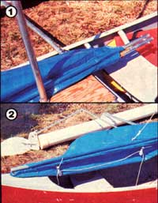
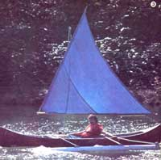
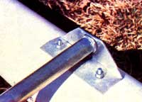
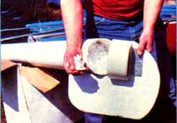
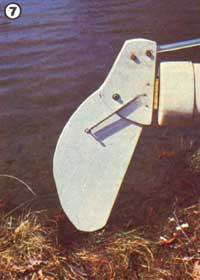
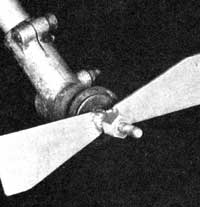
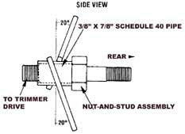
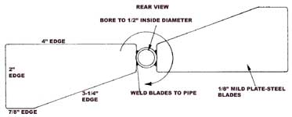
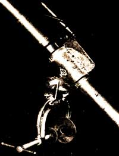
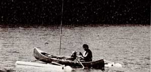

Go Sail A Canoe!
If you're sailing to try anything once,this nautical hybrid is sure to get you started
By the Mother Earth News editors
May/June 1983
Even though our only native American watercraft-the canoe-has undergone quite a few changes since its birchbark days, its distinctive shape has endured. And while that narrow, double-ended design is desirable in terms of hydrodynamics, it has an inherent instability, which-as many occasional "park lake" skippers have learnedan have upsetting consequences.
Of course, this "tipsiness" doesn't even faze experienced paddlers, but most beginners do harbor a bit of mistrust for the nimble craft. Yet,with only a few basic modifications, even the most fickle of canoes can be converted into a stable fishing or sailing boat-and back again-in a matter of minutes!
PONTOONS BEFORE PADDLES
Not long ago, Dennis Burkholder and Robyn Bryan, two of MOTHER's research staffers, invested a few days of experimentation to come up with a nifty set of outriggers that can be clamped-pretty as you please-to the bow and stern thwarts, which stretch across a canoe's gunwales. And once they'd done that-and discovered what a stable platform they'd created-they decided to go one step further. So, the fellows raised a mast ... added a yard, a boom, and a polypropylene sail ... and worked up a simple set of rudders and a pair of bow skegs to provide improved tracking!
Mounting the outriggers proved to be a straightforward proposition. After measuring the canoe's beam, the would-be crew members bent two I 0-foot sections of 1" electrical conduit (E.M.T.), creating a pair of equal-length arms that extended downward at an angle of about 7' from level when the rods were placed in position across the gunwales. They then welded a 5/16" nut inside each end of both tubes, hose-clamped the supports in place, and bolted 1/8" X 2" X 6" aluminum angle brackets to the 5/16" nuts ... with the flanges facing down and in.
Next, Dennis and Robyn laid a 10-foot length of 6" Schedule 40 PVC sewer pipe beneath each pair of brackets (these pontoons are far and away the most expensive components used in the project, and new ones will run about $20 apiece) and drilled 5/16" holes to fasten the floats in place. (Six-inch sections of 3/4" conduit, with 5/16" X 1" bolts accurately spaced and welded perpendicularly to them, made excellent hangers. They could be tapped onto the end of a stick and inserted through the PVC wall, from the inside, without much difficulty ... even though the mounting holes are well beyond arm's reach.)
Once the pipe pontoons were installed, the fellows bent one pair of 3/4" X 60" E.M.T. sections into a modified "U" shape (one curve was 45' and the other was 90'), and another set of 3/4" X 26" pieces into a 90 deg arc. They then welded these components beneath the center of the outrigger supports-about a foot apart-to create the cradle shown in the photograph. (A canoe's hull depth will vary depending upon the craft's configuration, so if you're planning to duplicate what we've done here, you may have to alter the cradle's dimensions to suit your own canoe.)
With the outrigger finished, Robyn and Dennis set about constructing the plywood parts that make up the 1/4 " X 8 " X 21 " rudders and their 1/4" X 6" X 9" boxes (which use 1/4" X 4" X 9" internal spacers), the 1/2" X 14" X 16" bow skegs, and the 1/2"-thick cut-to-fit mast step and partner. Our photos should serve as a guide when you cut your own pieces.
RUDDER CONFUSION
To make the rudder boxes, Dennis first glued the side panels to the spacers and locked everything together- including a 3" brass butt hinge--with No. 10-32 X 1-1/4" bolts. Then, after sealing the wood with marine paint (or a waterproof sealer), he secured the rudders within their channels with 1/4 " X 1- 1/4 " bolts. (A 1/4 " X 6 " tension spring strung between the upper :hinge bolts, and a fastener on each rudder, allows those guides to pivot from their full downward position without snapping, should the pontoons run aground.) Finally, Dennis and Robyn attached a 112" X 32" E.M.T. tiller to the side of each rudder box, near the top, with two 1/4 " X 1- 1/2 "bolts.
Their next task was to fasten the rudder assemblies and the bow skegs to the four 6" PVC pipe caps they'd purchased along with the pontoon sewer line. This was fairly easy, since it involved little more than locking the free halves of the hinges-through thin plywood spacer plates-to the center of one pair of caps, with No. 10-32 X 1-1/4" bolts ... mounting the painted skegs to 1/8" X 2" X 5" aluminum angle brackets with 1/4" X I" fasteners ... and then, in turn, bolting those hangers to the remaining pipe caps as before. (To prevent leaks from developing at the joints, it'd be a good idea to smear the mating surfaces with silicone sealant.)
Now, with both fore and aft assemblies ready, MOTHER's freshwater salts filled the pontoon cavities with foam "packing peanuts", smeared the inside of the pipe caps with petroleum jelly, and pressed the tips in place, locking them at the top with short sheet metal screws. Once that was done, they flattened the ends of a 10-foot length of 112" conduit, repeated that performance on each of the free tiller ends, and mounted the makeshift tie rod with 1/4" X I " bolts.
JIGGING THROUGH THE RIGGING
The I " X 10' E. M. T. mast proved to be a cinch to erect. After first drilling a 1-1/4" hole through the 1/2 " X 13-1/2 " X 14 "mast partner-centered 10 inches behind the forward edge-Dennis and Robyn clamped the board temporarily in place at the top of the cradle frame, and set the 1/2" X 13-1/2" X 32" step into its niche below. A 1- 1/4" pipeto-hose barb threaded into a 1-1/4" floor flange was then positioned on the step, and the mast was slipped through the partner and into the center of the fitting. Once the pole was straight, the crew marked drilling holes for the floor flange and both plywood platforms, removed the mast, made the bores, and fastened the parts in place ... the partner received four No. 6 X 3/4" panhead sheet metal screws, the step needed ten of the same, and the flange took two 1/4 " X 1" bolts.
Before setting the mast for good, our swabbies had to fasten a 3/16" block pulley to its uppermost end. Then they made a boom by welding two more pulleys to a 3/4 " X 10' section of conduit, one 12 inches and the other 38 inches from the same end, and finished up by tacking a 1- 1/4 "-diameter ring to the pole, at a point about 55 inches down the line from the centermost pulley.
The 3/4" X 10' E.M.T. yard-which was hinged to the boom with a 5/16" X 2-112" bolt-had a 1/2"-diameter eyebolt fastened through its body 3 feet from the unpivoted end. Once that assembly was completed, Robyn spread out a 10' X 12' reinforced poly tarp and laid the conduit frame on it to describe an equilateral triangle. By folding the edges around the tube, running rows of stitching along the scams, and trimming the extra material, he and Dennis were able to make themselves a pretty fair sail.
All that was left, then, was to slip the mast through the boom hoop and into its seat, fasten one 4-1/2" cleat to the center of the aft outrigger strut and another to the cradle frame behind the partner, and rig up the 3/16" line. The mainsheet required about 25 feet of cord, which was fastened to the canoe's stern shackle, and run through the two boom blocks and back to the aft strut cleat. The yard halyard needed the same amount of rope, but-when tied to the yard's eyebolt, strung through the pulley on the mast, and secured to the cradle cleatthat line is used to raise and lower the sail rather than to control the boom.
MOM's waterborne researchers have found their new hybrid "day sailer" to be a lot more maneuverable and stable than they ever imagined. In short, they feel that they've made their canoe a much more versatile vessel ... yet one which can still be converted back to its original trim in jig time.
WE WERE TROLLING ALONG
Once MOM's makeshift mariners had converted their canoe into a sailing vessel, they began to consider the possibility of coming up with an auxiliary motor for the craft. Naturally, they weren't about to actually purchase a conventional outboard motor (after all, there'd be little adventure involved in such an approach, and a new 3-horsepower model would cost at least $300) , , . so, they started prowling around for objects that could be modified-at minimal expense-to do the job.
Their search led them to a weed trimmer in the maintenance building at the Eco-Village, and-its being winter-they fig ured no one would miss it ... for a while, at least. The Green Machine 4000 was equipped with a 37-cubic-centimeter twocycle engine rated at 2.7 horsepower ... and, with its long stem and angled output shaft, the trimmer seemed to beg for the addition of a propeller.
To make the best use of the two-cycle motor's comparatively high spin rate, our puddle-jumping seamen settled on a homemade prop with a pitch of about 10 inches. In landlubber's terms, that means that the two blades are angled about 201 from perpendicular to the shaft ... and that, in one full revolution, the propeller should push the boat forward 10 inches (not considering slippage). The blades were cut to the shape shown, from 118" mild steel, and were welded to a 7/8"-Iong piece of 318" water pipe. Once the fused parts had cooled, the inside of the pipe was bored to 112 ", so that it would fit right onto the Green Machine's output shaft. That nut-and-stud assembly, which was formerly used to attach blades to the device, now holds the prop in place. (On our trimmer the fastener has left-hand threads. As this fitting suggests, the output shaft itself spins clockwise when viewed from behind . . . whereas all of the readymade propellers we checked were designed to turn counterclockwise. Screws of both types should be available, though.)
Mounting the trimmer-turned-outboard to our canoe proved to be more involved than the actual making of the prop. Because the boat doesn't have a square stern or a motor mounting plate, they decided to attach the motor to the vessel's side. To complicate matters, the outboard needed to pivot, so that the canoe could be steered.
A I " pipe "T" fits snugly over the Green Machine's stem, so that part was adapted to hold the motor, and a C-clamp was attached to provide a mount to the boat's side. To accomplish this, two 114" metal straps were welded to the back of a 3" C-clamp (with fender washers welded to its jaws), and then attached to the base of the "T" with a 318" X 2-112" bolt and nut that penetrates both pieces of steel and the plumbing fitting. Finally, a tab was welded to the top of the "T" and fastened to the trimmer's strap linkage to prevent the outboard from twisting under power.
The make-do powerplant moves the canoe around the lake at the Eco-Village in a surprisingly snappy fashion. Moreover, when the maintenance crew needs the trimmer back, Dennis and Robyn can put up the sail and "pocket" the propeller... at least until the weeds are attended to!
EDITOR'S NOTE: Always wear a life preserver when enjoying any kind of watercraft activity ... and do check the boat licensing and access regulations in your area before you launch!
|
 [1] The boom is linked to the mast with a steel slip ring, and is controlled by ... [2] a pair of block pulleys and some 3116"" line. |
 Robyn Bryan at the helm under full sail! The tillers and tie rod are sections of 112"" E.M. T. |
 Aluminum angle brackets secure the conduit outrigger arms to the PVC pontoons, and those sewer pipes are stuffed with .. |
|
 packing peanuts to provide flotation. |
 A conduit cradle supports the mast step and partner. |
 The rudders' box housings are mounted on hinges. |
|
 |
 |
 |
|
 |
 |
|